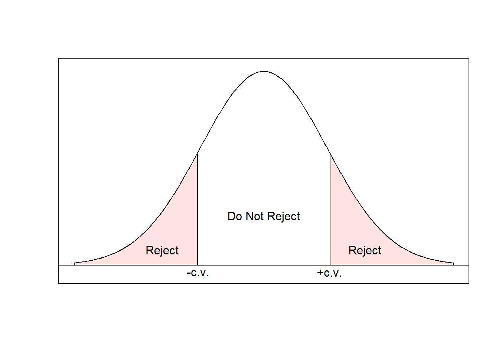
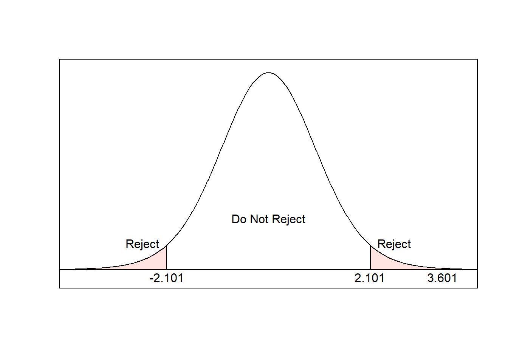

Module 7 Introduction to Hypothesis Testing
In this module, we will continue our discussion on statistical inference with a discussion on hypothesis testing. In hypothesis testing, we take a more active approach to our data by asking questions about population parameters and developing a framework to answer those questions. We will root this discussion in confidence intervals before learning about several other approaches to hypothesis testing.
Module Learning Outcomes/Objectives
- Test one sample means using
- confidence intervals.
- the critical value approach.
- the p-value approach.
R Objectives
- Generate hypothesis tests for a mean.
- Interpret R output for tests of a mean.
This module’s outcomes correspond to course outcomes (6) apply statistical inference techniques of parameter estimation such as point estimation and confidence interval estimation and (7) apply techniques of testing various statistical hypotheses concerning population parameters.
7.1 Logic of Hypothesis Testing
This section is framed in terms of questions about a population mean \(\mu\), but the same logic applies to \(p\) (and other population parameters).
One of our goals with statistical inference is to make decisions or judgements about the value of a parameter. A confidence interval is a good starting point, but we might also want to ask questions like
- Do cans of soda actually contain 12 oz?
- Is Medicine A better than Medicine B?
A hypothesis is a statement that something is true. A hypothesis test involves two (competing) hypotheses:
- The null hypothesis, denoted \(H_0\), is the hypothesis to be tested. This is the “default” assumption.
- The alternative hypothesis, denoted \(H_A\) is the alternative to the null.
Note that the subscript 0 is “nought” (pronounced “not”). A hypothesis test helps us decide whether the null hypothesis should be rejected in favor of the alternative.
Example: Cans of soda are labeled with “12 FL OZ”. Is this accurate?
The default, or uninteresting, assumption is that cans of soda contain 12 oz.
- \(H_0\): the mean volume of soda in a can is 12 oz.
- \(H_A\): the mean volume of soda in a can is NOT 12 oz.
We can write these hypotheses in words (as above) or in statistical notation. The null specifies a single value of \(\mu\)
- \(H_0\): \(\mu=\mu_0\)
We call \(\mu_0\) the null value. When we run a hypothesis test, \(\mu_0\) will be replaced by some number. For the soda can example, the null value is 12. We would write \(H_0: \mu = 12\).
The alternative specifies a range of possible values for \(\mu\):
- \(H_A\): \(\mu\ne\mu_0\). “The true mean is different from the null value.”
Take a random sample from the population. If the data area consistent with the null hypothesis, do not reject the null hypothesis. If the data are inconsistent with the null hypothesis and supportive of the alternative hypothesis, reject the null in favor of the alternative.
Example: One way to think about the logic of hypothesis testing is by comparing it to the U.S. court system. In a jury trial, jurors are told to assume the defendant is “innocent until proven guilty”. Innocence is the default assumption, so
- \(H_0\): the defendant is innocent.
- \(H_A\): the defendant is guilty.
Like in hypothesis testing, it is not the jury’s job to decide if the defendant is innocent. That should be their default assumption. They are only there to decide if the defendant is guilty or if there is not enough evidence to override that default assumption. The burden of proof lies on the alternative hypothesis.
Notice the careful language in the logic of hypothesis testing: we either reject, or fail to reject, the null hypothesis. We never “accept” a null hypothesis.
7.1.1 Decision Errors
- A Type I Error is rejecting the null when it is true. (Null is true, but we conclude null is false.)
- A Type II Error is not rejecting the null when it is false. (Null is false, but we do not conclude it is false.)
| \(H_0\) is | |||
|---|---|---|---|
| True | False | ||
| Decision | Do not reject \(H_0\) | Correct decision | Type II Error |
| Reject \(H_0\) | Type I Error | Correct decision | |
Example: In our jury trial,
- \(H_0\): the defendant is innocent.
- \(H_A\): the defendant is guilty.
A Type I error is concluding guilt when the defendant is innocent. A Type II error is failing to convict when the person is guilty.
How likely are we to make errors? Well, \(P(\)Type I Error\()=\alpha\), the significance level. (Yes, this is the same \(\alpha\) we saw in confidence intervals!) For Type II error, \(P(\)Type II Error\()=\beta\). This is related to the sample size calculation from the previous module, but is otherwise something we don’t have time to cover.
We would like both \(\alpha\) and \(\beta\) to be small but, like many other things in statistics, there’s a trade off! For a fixed sample size,
- If we decrease \(\alpha\), then \(\beta\) will increase.
- If we increase \(\alpha\), then \(\beta\) will decrease.
In practice, we set \(\alpha\) (as we did in confidence intervals). We can improve \(\beta\) by increasing sample size. Since resources are finite (we can’t get enormous sample sizes all the time), we will need to consider the consequences of each type of error.
Example We could think about assessing consequences through the jury trial example. Consider two possible charges:
- Defendant is accused of stealing a loaf of bread. If found guilty, they may face some jail time and will have a criminal record.
- Defendant is accused of murder. If found guilty, they will have a felony and may spend decades in prison.
Since these are moral questions, I will let you consider the consequences of each type of error. However, keep in mind that we do make scientific decisions that have lasting impacts on people’s lives.
- If the null hypothesis is rejected, we say the result is statistically significant. We can interpret this result with:
- At the \(\alpha\) level of significance, the data provide sufficient evidence to support the alternative hypothesis.
- If the null hypothesis is not rejected, we say the result is not statistically significant. We can interpret this result with:
- At the \(\alpha\) level of significance, the data do not provide sufficient evidence to support the alternative hypothesis.
Notice that these conclusions are framed in terms of the alternative hypothesis, which is either supported or not supported. We will never conclude the null hypothesis. Finally, when we write these types of conclusions, we will write them in the context of the problem.
Section Exercises
- For each of the following scenarios, describe what it means to make a Type I and a Type II error.
- Researchers want to test if a new surgical procedure helps prevent recurring heart attacks. (Null hypothesis: the procedure does not prevent recurring heart attacks.)
- Cans of soda are labeled with “12 FL OZ”. A company will test if this claim is accurate.
- For each of the scenarios above, comment on the consequences of making each error type.
7.2 Confidence Interval Approach to Hypothesis Testing
We can use a confidence interval to help us weigh the evidence against the null hypothesis. A confidence interval gives us a range of plausible values for \(\mu\). If the null value is in the interval, then \(\mu_0\) is a plausible value for \(\mu\). If the null value is not in the interval, then \(\mu_0\) is not a plausible value for \(\mu\).
- State null and alternative hypotheses.
- Decide on significance level \(\alpha\). Check assumptions (decide which confidence interval setting to use).
- Find the critical value.
- Compute confidence interval.
- If the null value is not in the confidence interval, reject the null hypothesis. Otherwise, do not reject.
- Interpret results in the context of the problem.
Example: Is the average mercury level in dolphin muslces different from \(2.5\mu g/g\)? Test at the 0.05 level of significance. A random sample of \(19\) dolphins resulted in a mean of \(4.4 \mu g/g\) and a standard deviation of \(2.3 \mu g/g\).
- \(H_0: \mu = 2.5\) and \(H_A: \mu \ne 2.5\).
- Significance level is \(\alpha=0.05\). The value of \(\sigma\) is unknown and \(n = 19 < 30\), so we are in setting 3.
- For setting 3, the critical value is \(t_{df, \alpha/2}\). Here, \(df=n-1=18\) and \(\alpha/2 = 0.025\):
## [1] -2.100922
- The confidence interval is \[\begin{align} \bar{x} &\pm t_{df, \alpha/2}\frac{s}{\sqrt{n}} \\ 4.4 &\pm 2.101 \frac{2.3}{\sqrt{19}} \\ 4.4 &\pm 1.109 \end{align}\] or \((3.29, 5.51)\).
- Since the null value, \(2.5\), is not in the interval, it is not a plausible value for \(\mu\) (at the 95% level of confidence). Therefore we reject the null hypothesis.
- At the 0.05 level of significance, the data provide sufficient evidence to conclude that the true mean mercury level in dolphin muscles is greater than \(2.5\mu g/g\).
Note: The alternative hypothesis is “not equal to”, but we conclude “greater than” because all of the plausible values in the confidence interval are greater than the null value.
Section Exercises
- The weights of 6 randomly selected NFL linebackers were \(243, 238, 229, 253, 248, 225\). Suppose we want to test if the mean weight of NFL linebackers differs from 230 pounds. We will test at the 0.05 level of significance. (Note that \(\bar{x} = 239.3\) and \(s = 10.9\).)
- Write out the null and alternative hypotheses.
- Using the confidence interval approach, what decision should you make about rejecting or not rejecting the null hypotheses?
- Interpret your results in the context of the problem.
- Researchers took a random sample of 20 green sea turtle nests and counted the number of eggs in each. They found a mean of 107.3 eggs with standard deviation 13.7. Use the confidence interval approach to test at the 0.1 level of confidence if the true mean number of eggs is 110.
- Some Sac State students claim the average commute to campus is 45 minutes. A random sample of 32 students resulted in a mean of 31 minutes with standard deviation 18 minutes. Use the confidence interval approach to test their claim at the 0.05 level of confidence.
- A city council member suspects that people speed through a certain intersection. They want to know the average speed at which drivers enter the intersection. They set up a speed camera and randomly sample 250 vehicles at different times of day, which results in a mean speed of 52 mph with standard deviation 8 mph. Suppose the posted speed limit is 45mph. Use the confidence interval approach at the 0.05 level of confidence to test the claim that drivers do not follow the speed limit.
7.3 Critical Value Approach to Hypothesis Testing
We learned about critical values when we discussed confidence intervals. Now, we want to use these values directly in a hypothesis test. We will compare these values to a value based on the data, called a test statistic.
Idea: the null is our “default assumption”. If the null is true, how likely are we to observe a sample that looks like the one we have? If our sample is very inconsistent with the null hypothesis, we want to reject the null hypothesis.
7.3.1 Test statistics
Test statistics are similar to z- and t-scores: \[\text{test statistic} = \frac{\text{point estimate}-\text{null value}}{\text{standard error}}.\] In fact, they serve a similar function in converting a variable \(\bar{X}\) into a distribution we can work with easily.
- Large Sample Setting: \(\mu\) is target parameter, \(n \ge 30\)
\[z = \frac{\bar{x}-\mu_0}{s/\sqrt{n}}\]
- Small Sample Setting: \(\mu\) is target parameter, \(n < 30\)
\[t = \frac{\bar{x}-\mu_0}{s/\sqrt{n}}\]
The set of values for the test statistic that cause us to reject \(H_0\) is the rejection region. The remaining values are the nonrejection region. The value that separates these is the critical value!

Steps:
- State the null and alternative hypotheses.
- Determine the significance level \(\alpha\). Check assumptions (decide which setting to use).
- Compute the value of the test statistic.
- Determine the critical values.
- If the test statistic is in the rejection region, reject the null hypothesis. Otherwise, do not reject.
- Interpret results.
Example: Researchers took a random sample of 20 green sea turtle nests and counted the number of eggs in each. They found a mean of 107.3 eggs with standard deviation 13.7. Using the critical value approach at the 0.1 level of significance, test if the mean number of eggs in green sea turtle clutches is 110.
Solution: From the problem statement, \(n=20\), \(\bar{x}=107.3\), and \(s=13.7\).
- \(H_0: \mu = 110\) and \(H_A: \mu \ne 110\).
- Significance level is \(\alpha=0.1\). The value of \(\sigma\) is unknown and \(n = 20 < 30\), so we are in setting 3.
- The test statistic is \[\begin{align} t &= \frac{\bar{x}-\mu_0}{s/\sqrt{n}} \\ &= \frac{107.3-110}{13.7/\sqrt{20}} \\ &= -0.881 \end{align}\]
- The critical value is \(t_{df, \alpha/2}\). Here, \(df=n-1=19\) and \(\alpha/2 = 0.05\):
## [1] 1.729133So the critical value is \(t_{19, 0.05}=1.729\). 5. The test statistic is not in the rejection region, so we will fail to reject the null hypothesis:

- At the 0.05 level of significance, the data provide insufficient evidence to conclude that the true mean number of eggs in a green sea turtle next differs from \(110\).
Section Exercises
- The weights of 6 randomly selected NFL linebackers were \(243, 238, 229, 253, 248, 225\). Suppose we want to test if the mean weight of NFL linebackers differs from 230 pounds. We will test at the 0.05 level of significance. (Note that \(\bar{x} = 239.3\) and \(s = 10.9\).)
- Write out the null and alternative hypotheses.
- Find the test statistic.
- Using the critical value approach, what decision should you make about rejecting or not rejecting the null hypotheses?
- Interpret your results in the context of the problem.
- Researchers took a random sample of 20 green sea turtle nests and counted the number of eggs in each. They found a mean of 107.3 eggs with standard deviation 13.7. Use the critical value approach to test at the 0.1 level of confidence if the true mean number of eggs is 110.
- Some Sac State students claim the average commute to campus is 45 minutes. A random sample of 32 students resulted in a mean of 31 minutes with standard deviation 18 minutes. Use the critical value approach to test their claim at the 0.05 level of confidence.
- A city council member suspects that people speed through a certain intersection. They want to know the average speed at which drivers enter the intersection. They set up a speed camera and randomly sample 250 vehicles at different times of day, which results in a mean speed of 52 mph with standard deviation 8 mph. Suppose the posted speed limit is 45mph. Use the critical value approach at the 0.05 level of confidence to test the claim that drivers do not follow the speed limit.
7.4 P-Value Approach to Hypothesis Testing
If the null hypothesis is true, what is the probability of getting a random sample that is as inconsistent with the null hypothesis as the random sample we got? This probability is called the p-value.
Example: Is the average mercury level in dolphin muscles different from \(2.5\mu g/g\)? Test at the 0.05 level of significance. A random sample of \(19\) dolphins resulted in a mean of \(4.4 \mu g/g\) and a standard deviation of \(2.3 \mu g/g\).
Probability of a sample as inconsistent as our sample is \(P(t_{df} \text{ is as extreme as the test statistic})\). Consider \[P(t_{18} > 3.6) = 0.001\] but we want to think about the probability of being “as extreme” in either direction (either tail), so \[\text{p-value} = 2P(t_{18}>3.6) = 0.002\]
If \(\text{p-value} < \alpha\), reject the null hypothesis. Otherwise, do not reject.
7.4.1 P-Values
Large Sample Setting: \(\mu\) is target parameter, \(n \ge 30\), \[2P(Z > |z|)\] where \(z\) is the test statistic.
Small Sample Setting: \(\mu\) is target parameter, \(n < 30\), \[2P(t_{df} > |t|)\] where \(t\) is the test statistic.
Note: \(|a|\) is the “absolute value” of \(a\). The absolute value takes a number and throws away the sign, so \(|2|=2\) and \(|-3|=3\).
Steps:
- State the null and alternative hypotheses.
- Determine the significance level \(\alpha\). Check assumptions (decide which setting to use).
- Compute the value of the test statistic.
- Determine the p-value.
- If \(\text{p-value} < \alpha\), reject the null hypothesis. Otherwise, do not reject.
- Interpret results.
We often use p-values instead of the critical value approach because they are meaningful on their own (they have a direct interpretation).
Example: Is the average meerkat height different from 25cm? A random sample of 31 meerkats yielded a mean of 26.5cm and a standard deviation of 4.07cm. Use the p-value approach to test at the 0.05 level of significance.
Solution: From the problem statement, \(n=31\), \(\bar{x}=26.5\) and \(s=4.07\). Then,
- \(H_0: \mu = 25\) and \(H_A: \mu \ne 25\).
- Significance level is \(\alpha=0.05\). The value of \(\sigma\) is unknown and \(n = 31 \ge 30\), so we are in setting 2 (standard normal).
- The test statistic is \[\begin{align} z &= \frac{\bar{x}-\mu_0}{s/\sqrt{n}} \\ &= \frac{26.5-25}{4.07/\sqrt{31}} \\ &= 2.052 \end{align}\]
- The p-value is \[2P(z > |z|) - 2P(z > 2.052) = 0.040\]
- Since \(\text{p-value}=0.04 < \alpha=0.05\), reject the null hypothesis.
- At the 0.05 level of significance, the data provide sufficient evidence to conclude that the true mean height of meerkats is greater than 25cm.
As before, this is the same conclusion we came to when we used the confidence interval and critical value approaches. All of these approaches are exactly equivalent.
Section Exercises
- The weights of 6 randomly selected NFL linebackers were \(243, 238, 229, 253, 248, 225\). Suppose we want to test if the mean weight of NFL linebackers differs from 230 pounds. We will test at the 0.05 level of significance. (Note that \(\bar{x} = 239.3\) and \(s = 10.9\).)
- Write out the null and alternative hypotheses.
- Find and interpret the p-value.
- Using the p-value approach, what decision should you make about rejecting or not rejecting the null hypotheses?
- Interpret your results in the context of the problem.
- Researchers took a random sample of 20 green sea turtle nests and counted the number of eggs in each. They found a mean of 107.3 eggs with standard deviation 13.7. Use the p-value approach to test at the 0.1 level of confidence if the true mean number of eggs is 110.
- Some Sac State students claim the average commute to campus is 45 minutes. A random sample of 32 students resulted in a mean of 31 minutes with standard deviation 18 minutes. Use the p-value approach to test their claim at the 0.05 level of confidence.
- A city council member suspects that people speed through a certain intersection. They want to know the average speed at which drivers enter the intersection. They set up a speed camera and randomly sample 250 vehicles at different times of day, which results in a mean speed of 52 mph with standard deviation 8 mph. Suppose the posted speed limit is 45mph. Use the p-value approach at the 0.05 level of confidence to test the claim that drivers do not follow the speed limit.
R Lab: Hypothesis Tests for a Mean
To conduct hypothesis tests for a mean in R, we will use the t.test command. The arguments we will use for hypothesis testing are
x: the variable that contains the data we want to use to construct a confidence interval.mu: the null value, \(\mu_0\).conf.level: the desired confidence level (\(1-\alpha\)).
We will again to use the Loblolly pine tree data.
Let’s test if the average height of Loblolly pines differs from \(40\) feet. We will test at a 0.01 level of significance (\(\alpha = 0.01\)). So \(H_0: \mu = 40\) and \(H_A: \mu \ne 40\) and the R command will look like
##
## One Sample t-test
##
## data: height
## t = -3.3851, df = 83, p-value = 0.001089
## alternative hypothesis: true mean is not equal to 40
## 99 percent confidence interval:
## 26.41761 38.31120
## sample estimates:
## mean of x
## 32.3644The output from this test shows the following (top to bottom):
- the variable used in the hypothesis test.
- the value of the test statistic (\(t = -3.3851\)), the degrees of freedom (\(83\)), and the p-value (\(0.001\)).
- the alternative hypothesis (\(H_0: \mu\ne 40\)).
- the confidence interval (\(29.42, 38.31\)).
- the sample mean (\(\bar{x} = 32.36\)).
Based on this output, we have everything we need to conduct a hypothesis test using (A) the confidence interval approach, (B) the critical value approach, or (C) the p-value approach! In practice, we might include results from multiple approaches: At the 0.01 level of significance, there is sufficient evidence to reject the null hypothesis and conclude that the true mean height of Loblolly pines is less than 40 feet (\(t = -3.385\), p-value\(=0.001\)).
Comment: Notice are we using t.test and not a test using the normal distribution? Remember that when \(n \ge 30\), the t and standard normal distributions are basically the same! Therefore, when using a computer, we often use the t-distribution regardless of sample size.